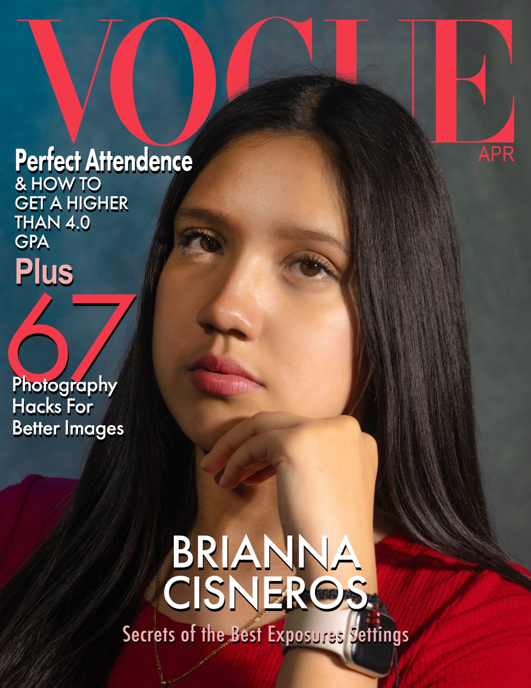
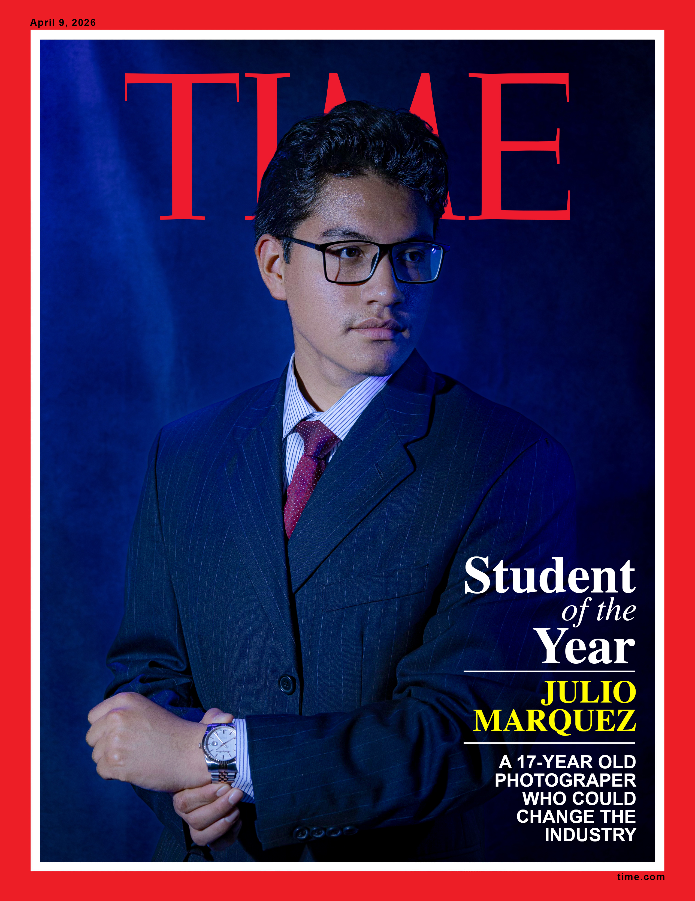
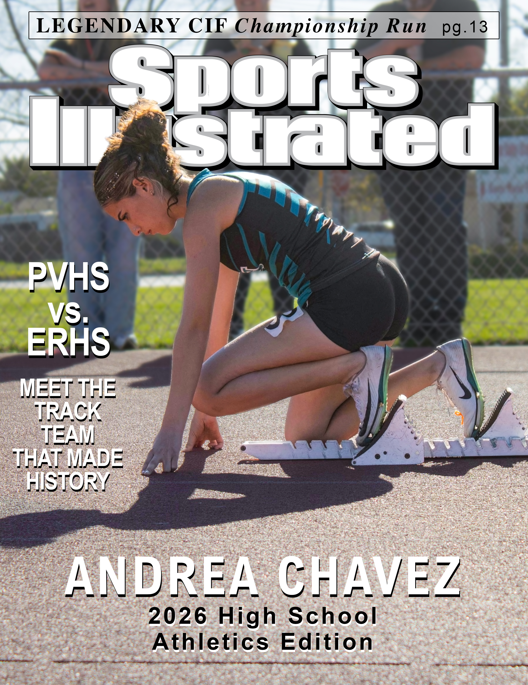
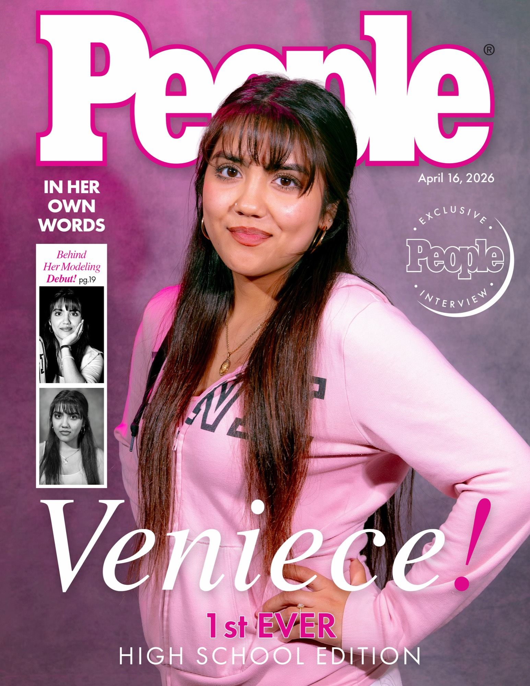

Student Work
Pioneer Valley High School · Inaugural CTE Photography Program · 2025–2026
Magazine Cover Project
Pioneer Valley High School has never had a photography program.
Not until now.
In 2025, Mr. Silva brought CTE Photography to PVHS and built it from the ground up. This is the inaugural class. The first photography program in the school's history. Taught by Mr. Silva alongside part-time instructor Ms. Garcia, these are not first-year photography students. They are the first photography students Pioneer Valley High School has ever had. They walked in with no photography background, no prior coursework, and no frame of reference for what the lens could do.
In one year, they produced this.
These editorial mockups are fully realized covers: conceived, lit, shot, and designed by the first photography students in PVHS history at a level that could stand next to what you would see on a newsstand. The craft is real. The vision is entirely theirs.
Over 20 years. One school. No photography program, until the day Mr. Silva decided there would be one.
That year is now. This is what the first year looks like.
Ella Naoe. Gregorio Calleja. Julio Marquez. Davina Royall Showalter. Jessica Valdez.
Remember those names.
This program does not exist without Dr. Paul Robison, whose support and commitment to finding funding made CTE Photography at PVHS possible, and Superintendent Garcia, whose steady belief in my vision and continued support of the arts at Pioneer Valley High School has allowed this work to take root and grow.
Mr. Chris Silva | Visual and Performing Arts Instructor
Photography · Digital Arts · Video Production
Founder, CTE Photography Program | Pioneer Valley High School
Ms. Garcia, Part-Time Photography Instructor

Ella Naoe
Vogue

Gregorio Calleja
Rolling Stone

Julio Marquez
Time

Davina Royall Showalter
Sports Illustrated

Jessica Valdez
People